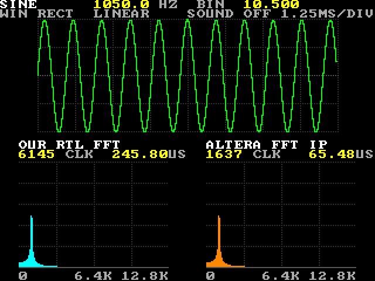
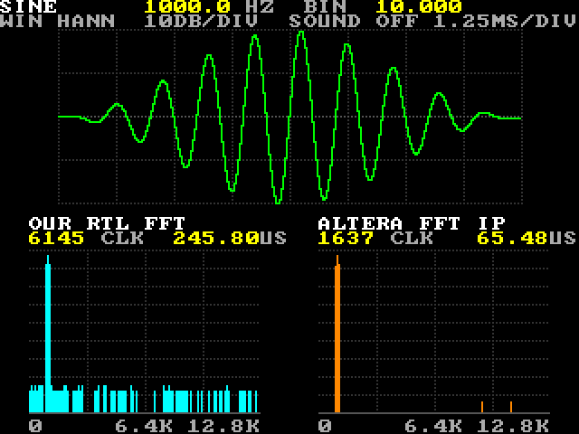
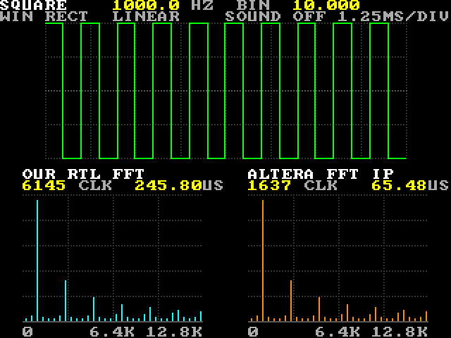
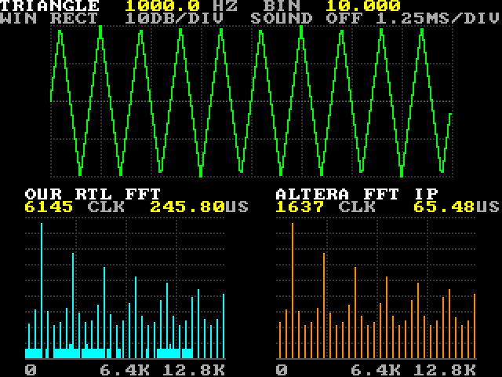
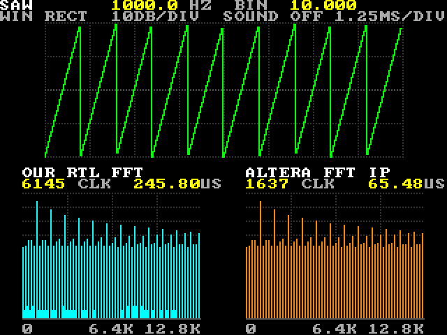
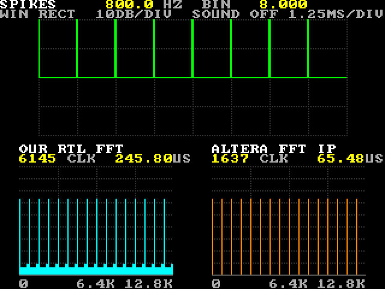
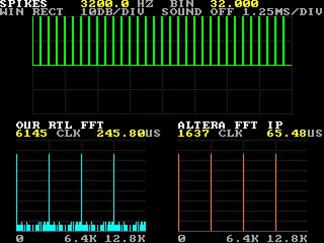
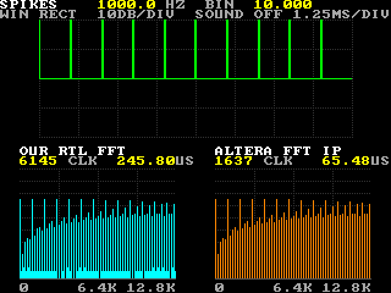
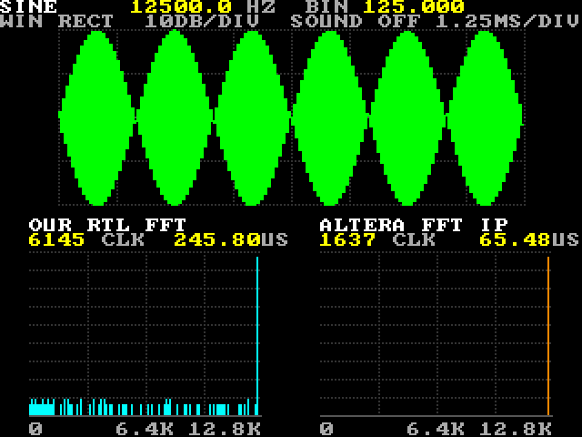
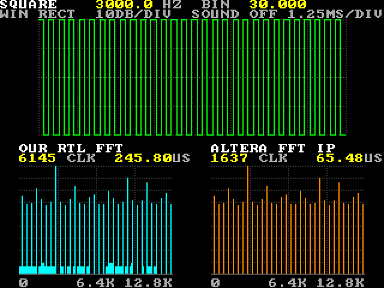

FFT Lab: tutorial
A guided tour of the lab, one experiment at a time. Each one says what to do, shows what you should see (a real picture read back from the board) and explains the signal processing behind it: bins, leakage, decibels, windows, harmonics, combs, noise and aliasing, and how our small FFT compares with Altera's.
Contents
- Before you start
- A tour of the screen
- The numbers behind the picture
- One sine, one bar
- Between two bins: leakage
- Decibels or linear
- The Hann window
- Square, triangle, saw: harmonics
- Spikes: a comb
- Noise
- Aliasing: above half the sample rate
- Two FFTs side by side
- Listen to it
- Test yourself
- Words
- About the pictures
Before you start
- Build and load the lab as in the user guide, and leave
programrunning: the IP's panel needs that connection. - Start every experiment from the defaults: press KEY0, or send
D. That is a 1 kHz sine, no window, the dB scale, no hold, no sound. - Each experiment gives the controls and the same settings as USB letters, for example
python scripts/de10.py send S1N80:Sthe shape,Nthe frequency in steps of 12.5 Hz,Wthe window,Lthe scale (the guide has the whole list). Or ask the chat: "set the lab to a 1,050 Hz sine". - Heights are in the lab's own pixels (the screen is 320 × 240; the pictures here show it twice that size). On the dB scale
the top of a panel, 90 pixels, is a full-scale sine.
python scripts/de10.py send Rreports the tallest bar of each FFT, so you can read heights without a ruler.
A tour of the screen
The lab right after loading, read back from the board over USB:
| # | Zone | Shows |
|---|---|---|
| 1 | Text | The shape and its frequency, in Hz and in bins: SINE 1000.0 HZ BIN 10.000. Under it the
window, the scale, the sound and the scope's time scale: WIN RECT 10DB/DIV SOUND OFF 1.25MS/DIV. |
| 2 | Scope (green) | The 256 samples both FFTs get, after the window: 10 ms. A dotted line every 32 samples (1.25 ms). Across: the outer lines are where the lab's waves peak (¾ of full scale), the inner lines half of that, zero in the middle. |
| 3 | Titles and times | OUR RTL FFT and ALTERA FFT IP, each with the clocks its FFT
took and the time that is at 25 MHz: 6145 CLK 245.80US and 1637 CLK 65.48US. |
| 4 | Our spectrum (cyan) | 128 bars, one per bin of 100 Hz, from our own FFT, fft_r2. In dB a
line every 10 dB; in linear a line every 20 %. |
| 5 | The IP's spectrum (orange) | The same 256 samples through Altera's FFT II, on the same scale. |
| 6 | Axis | 0, 6.4 kHz and 12.8 kHz. The faint vertical lines in both panels are 3.2, 6.4 and 9.6 kHz (bins 32, 64, 96). |
Off the screen: LEDR0 … LEDR5 show the shape, LEDR6 … LEDR9 the window, the linear scale, hold and sound; the 7-segment digits show the frequency in Hz; the shield's status LED lights while the IP is not running (guide).
The numbers behind the picture
Everything on the screen follows from a few numbers; the experiments below use them.
| Sample rate, fs | 25.6 kHz. The lab computes its samples (there is no ADC), as if it had sampled a signal at this rate. |
| Record | 256 samples = 10 ms. A new one every frame of the screen (59.5 a second), through both FFTs. |
| Bin | fs / 256 = 100 Hz, the spacing of the frequencies an FFT reports. Bin k is k × 100 Hz. |
| Bars | 128: bins 0 … 127, from 0 to 12.7 kHz. Bins 128 … 255 mirror these for a real signal, so they are not drawn. |
| Nyquist frequency | fs / 2 = 12.8 kHz, the highest frequency the samples can describe. |
| Generator | A DDS (direct digital synthesis): an 11-bit phase gains N every sample, so
f = N × 25,600 / 2,048 = N × 12.5 Hz, and the bin is N / 8. N runs from 0 to 1023 (0 to 12,787.5 Hz). The phase
starts from zero every frame, so the trace stands still, like a triggered oscilloscope. |
| Amplitude | ¾ of full scale (24,576 of 32,767): a sine on a bin is 2.5 dB under the top, 87.5 px. |
| dB scale | 1 px per dB, 90 px tall, a line every 10 dB. The top (0 dBFS) is a full-scale sine exactly on a bin, the bottom 90 dB below it. |
| Linear scale | 90 px for a full-scale sine on a bin, a line every 20 %. |
| Our FFT | 256 points, radix 2: 8 stages of 128 butterflies, one butterfly every 5 clocks. 6,145 clocks, 245.8 µs at 25 MHz. |
| The IP | Altera's FFT II, 256 points, block floating point: 1,637 clocks, 65.5 µs. |
| Time budget | Both FFTs run in the screen's vertical blanking, 28,000 clocks per frame, so a half-finished spectrum is never shown. |
One sine, one bar
D). Then push the joystick up a step at a time and watch the top line.
You should see
- ten cycles on the scope: 1 kHz for 10 ms;
- one bar at bin 10 in each panel, 87 px in ours and 88 in the IP's (
RreportsOUR_PK=010/087andIP_PK=010/088); - a sprinkle of low bars, 6 or 9 px, in our panel only;
- each joystick step adds 12.5 Hz, an eighth of a bin (
BIN 10.125,10.250…), and the single bar grows a skirt; it is one clean bar again only on the next whole bin (next experiment).
Why one bar. An FFT measures how much the record looks like each of 256 test waves, the bins: a cosine and a sine that fit a whole number of cycles into the 10 ms (0, 1, 2 … cycles, that is 0, 100, 200 … Hz). For each bin it multiplies the 256 samples by the test wave and adds the products up. Ten cycles of a sine match bin 10; against every other bin the products cancel to exactly zero over the record (the test waves are orthogonal). One frequency on a bin: one bar.
Why it is fast. Done one bin at a time, that is 256 × 256 = 65,536 multiply-adds. The FFT gets the same 256 answers
by splitting the job in halves, again and again: 8 stages of 128 butterflies (one complex multiply each), 1,024
multiplies, 64 times fewer. Our fft_r2 does a butterfly every 5 clocks, 5,120 of its 6,145 clocks; the rest is
loading the samples in and reading the answers out.
Why the low bars. Rounding. Our FFT halves its numbers at every stage so they can never overflow (÷256 in all) and keeps 16 bits. One unit in the last place is then 84 dB under a full-scale sine: a bar of 6 px, or 9 px when both the real and the imaginary part are one unit off. The IP rounds less on the way, so its floor stays empty (Two FFTs).
Between two bins: leakage
1050.0 HZ BIN 10.500
(S0N84). Then step on to 1,100 Hz and back.
You should see
- two tall bars, bins 10 and 11, at 84 and 83 px: 3.9 dB lower than the sine on a bin;
- a skirt over the whole panel, falling slowly away from the peak;
- even the far end, bins 100 to 127, at 27 to 29 px: still only about 60 dB down;
- both FFTs agree within a pixel;
- stepping on, the skirt shrinks again, and at 1,100 Hz there is one clean bar at bin 11.
| Bin | 5 | 6 | 7 | 8 | 9 | 10 | 11 | 12 | 13 | 14 | 15 | 16 |
|---|---|---|---|---|---|---|---|---|---|---|---|---|
| Height, px | 65 | 67 | 68 | 71 | 75 | 84 | 83 | 73 | 69 | 65 | 63 | 61 |
Why. 1,050 Hz puts 10.5 cycles into the record. The FFT sees only these 10 ms and treats them as one period of a wave that repeats forever. Put copies of the record end to end: each copy starts going up from zero, but the one before it ended going down, so every seam has a corner. That repeated wave is not a pure sine any more, and it takes every bin to describe it: the energy leaks out of the peak into all of them. That is leakage.
Near the peak the skirt falls as 1 / (distance in bins): 6 dB each time the distance doubles. Further out it falls faster, about 12 dB per doubling, because the seam has a corner but no jump (a jump would leak more). The two sides are not equal: bin 9 stands higher than bin 12. The spectrum of a real signal also has a mirror image at the negative frequencies, and its skirt adds a little more on the low side.
The dip of the peak half way between bins (3.9 dB here) is called the scalloping loss: the height of a tone depends on where it falls between the bins. The Hann window, two experiments on, makes both effects smaller.
Decibels or linear
S0N84L1). B again goes back to dB.
You should see
LINEARon the second line, and the grid now a line every 18 px (20 %);- in both panels a bar of 44 px at bin 10 and one of 42 px at bin 11, with a small foot on each side;
- the skirt that filled the panel in dB is gone: the far bars are less than a pixel tall.
Why. A decibel is a ratio on a log scale: 20 × log10 of the ratio of two amplitudes. 6 dB is a factor of 2, 20 dB a factor of 10, 60 dB a factor of 1,000. The dB scale's 90 dB span a ratio of 31,600 to 1 (about 15 bits), so a skirt at −60 dB is a third of the panel high. On the linear scale that same skirt is 1/1,000 of 67.5 px: less than a pixel.
Use dB to see small things next to big ones: leakage, harmonics, noise, rounding. Use linear to compare sizes directly: here the peak is 0.75 × 2/π × 90 ≈ 43 px, so the tone half way between bins reads at 64 % of its true amplitude. That is the 3.9 dB scalloping loss again.
The Hann window
S0N84W0L0), press A (W1). Then, with the
window still on, step down to 1,000 Hz (S0N80W1).

You should see
WIN HANNon the second line, and a burst on the scope: the wave fades in from zero and out to zero;- at 1,050 Hz the peak at 86 px, only 1.4 dB under a tone on a bin, and a skirt that drops fast (table below);
- the IP's skirt falling on towards the bottom (29, 25, 21, 20, 18, 15, 12 px at bins 17 to 23), while ours stops at its rounding floor, now 12 to 15 px;
- at 1,000 Hz, three bars instead of one: 82, 87, 82 px at bins 9, 10, 11.
The skirt with and without the window, by distance from the tone in bins. "Theory" is the window's formula; the two numbers on the screen are the bars just below and just above the tone, in our panel:
| Distance | No window: theory | On the screen | Hann: theory | On the screen |
|---|---|---|---|---|
| 0.5 | −3.9 dB (84 px) | 84, 83 | −1.4 dB (86 px) | 86, 86 |
| 1.5 | −13.5 dB (74 px) | 75, 73 | −15.4 dB (72 px) | 72, 72 |
| 2.5 | −17.9 dB (70 px) | 71, 69 | −32.3 dB (55 px) | 55, 55 |
| 3.5 | −20.8 dB (67 px) | 68, 65 | −41.9 dB (46 px) | 46, 46 |
| 4.5 | −23.0 dB (65 px) | 67, 63 | −48.7 dB (39 px) | 39, 39 |
Why. Leakage comes from the seam where the record's end meets its start. The Hann window multiplies the record by a smooth hump, one cycle of 1 − cos: zero at both ends, one in the middle. Now every record starts and ends at zero, gently, so the seam is smooth and the skirt falls fast. Hann's first side lobe is 31 dB down (no window: 13 dB), and its far skirt falls 18 dB for every doubling of the distance (no window: 6 dB). The far skirt is still there, about 68 dB down at bin 20, which only the IP's panel is clean enough to show.
The price: the peak is wider. A tone exactly on a bin now lights three bars, its neighbours 6 dB down, because the window itself is a mix of three bins. The window also halves the signal's amplitude on average (−6 dB); the lab adds those 6 dB back, so a tone keeps its height. The scalloping loss shrinks from 3.9 dB to 1.4 dB. Windows are a trade between a narrow peak and a low skirt; Hann is the usual first choice.
Square, triangle, saw: harmonics
S1N80); press B for
linear (L1) and B again. Then right again for the triangle (S2N80), and again for the saw
(S3N80).



You should see tall bars at 1 kHz and its whole multiples, the harmonics, with heights set by the shape:
| Harmonic | Bin | Square: dB | linear | Triangle: dB | linear | Saw: dB | linear |
|---|---|---|---|---|---|---|---|
| 1st (1 kHz) | 10 | 90 | 86 | 86 | 55 | 84 | 43 |
| 2nd | 20 | none | none | 78 | 22 | ||
| 3rd | 30 | 80 | 29 | 67 | 6 | 74 | 14 |
| 4th | 40 | none | none | 72 | 11 | ||
| 5th | 50 | 76 | 17 | 58 | 2 | 70 | 9 |
| 7th | 70 | 73 | 12 | 52 | 1 | … | |
| 9th | 90 | 71 | 10 | 48 | … | ||
| 11th | 110 | 69 | 8 | 44 | … |
- The square and the triangle have odd harmonics only; the saw has all of them (bins 10, 20 … 120).
- Between the harmonics there are smaller bars, 58 to 67 px for the square, 21 to 41 px for the triangle, about 51 to 59 px for the saw: harmonics above 12.8 kHz, folded back (Aliasing). The saw's 13th lands on bin 126 at 61 px.
- Every bar of the square and the triangle sits on bins 2, 6, 10, 14 …, every fourth bin; the saw's on the even bins; the odd bins stay empty.
- The square's pulses on the scope are not all the same width.
- The saw has a bar at bin 0 too, 51 px.
Why harmonics. Any wave that repeats every 1 ms is a sum of sines at 1 kHz and its whole multiples: its Fourier series. The shape decides the mix. A square has the odd harmonics at 1, 1/3, 1/5 … of the first; a saw has every harmonic at 1/n; a triangle has the odd ones at 1/n², so they fall twice as fast in dB. The rule behind it: a wave with jumps (square, saw) has harmonics falling as 1/n, 6 dB for every doubling of frequency; a wave with corners but no jumps (triangle) as 1/n², 12 dB per doubling. It is the same rule as the seam in leakage: the smoother the wave, the faster its spectrum falls. A sine has nothing to smooth, so it is one bar.
The first harmonics are taller than the wave itself would suggest: a square of height ¾ has a fundamental of 4/π × ¾ = 0.95 of full scale (−0.4 dB, 90 px); the triangle's is 8/π² × ¾ (−4.3 dB), the saw's 2/π × ¾ (−6.4 dB).
Why every fourth bin. At 25.6 kHz a 1 kHz period is 25.6 samples, not a whole number, so the square's pulses come out 12 or 13 samples wide (that is the uneven scope). But 5 periods are exactly 128 samples, so the record repeats after 128 samples: only even bins can be in it. For the square and the triangle, the second 64 samples are also the first 64 upside down, and that leaves only bins 2, 6, 10 … The saw has no upside-down half, so it fills all the even bins.
The saw's bar at bin 0 is its average. The DDS's ramp climbs in steps and stops one step short of the top, so the samples average −192 instead of 0: 39 dB under a full-scale sine, 51 px. Bin 0 is the record's average (DC).
Spikes: a comb
S4). Set 800 Hz
(S4N64), then 3,200 Hz (S4N256), then 1 kHz (S4N80).


You should see
- at 800 Hz, 8 spikes rising from the zero line, and 16 equal teeth of 63 px at bins 0, 8, 16 … 120: a comb;
- at 3,200 Hz, 32 spikes, and only 4 teeth, at bins 0, 32, 64, 96, taller: 76 px;
- at 1 kHz, 10 spikes not quite evenly spaced; teeth every 10 bins (65 px, easing to 62) and smaller bars between them on the even bins, rising from about 20 px to about 61 px towards the top;
- in our panel, a thick band of rounding bars.
| Setting | Frequency | A spike every | Teeth every | Tooth height |
|---|---|---|---|---|
S4N32 | 400 Hz | 64 samples | 4 bins | 57 px |
S4N64 | 800 Hz | 32 samples | 8 bins | 63 px |
S4N128 | 1.6 kHz | 16 samples | 16 bins | 69 px |
S4N256 | 3.2 kHz | 8 samples | 32 bins | 76 px |
S4N512 | 6.4 kHz | 4 samples | 64 bins (0 and 64) | 82 px |
Why. A single spike contains every frequency equally: it is what you get when you add up equal cosines at every bin. A train of spikes every P samples repeats every P samples, so it can hold only the frequencies that repeat with it: fs/P and its multiples, a comb of equal teeth 256/P bins apart. The spikes rise from zero, so they have an average too, and bin 0 is one of the teeth. Halve P: twice as many spikes, half as many teeth, so each tooth carries more, +6 dB (each tooth is 2 × ¾ / P of full scale). Short in time, wide in frequency; repeating in time, lines in frequency: a pair of rules that holds for every signal.
Why the 1 kHz comb is messy. 25.6 samples is not a whole number, so the spikes land on whole samples: gaps of 26, 26, 25, 26, 25 samples, each spike up to half a sample early or late. That is jitter. A timing error δt shifts the phase of frequency f by 2π f δt, so the higher the frequency, the bigger the error: the teeth lose a little height towards the top and the lost energy shows up as the bars between them. The pattern repeats every 128 samples, so they still sit on even bins only. Jitter in a real ADC's clock does the same to a real spectrum.
Noise
S5) and turn the window on with A
(W1). Watch for a few seconds. Press Start to hold one frame (H1), Start again to go on
(H0).
You should see
- random samples filling the scope, different in every frame;
- a bar at every bin, jumping up and down from frame to frame: most near 65 px, single bars from about 24 to 77 px;
- the same pattern in both panels: both FFTs get the same samples;
- with HOLD, one frame stands still, so you can look at it.
Why. White noise has its power spread evenly over all frequencies. The lab's noise is uniform between −¾ and +¾ of full scale: the same power as a sine of 0.61 of full scale (−4.3 dB). Shared out over 128 bars, each gets 1/128 of it (−21.1 dB): on average −25.3 dB, 64.7 px.
That is the average. One frame's bar is a random draw: its power follows an exponential distribution, so bars scatter widely, and the middle value (the median) is 1.6 dB under the average. Without the window that gives a median of 63 px (20 frames of the model: from 9 to 74 px). With the window the median is 65 px: the lab's +6 dB correction is right for a tone, but the window widens every bar to 1.5 bins of noise, so noise reads 1.76 dB higher.
Why a long FFT finds weak tones: a tone on a bin keeps its height whatever the FFT's length, but every doubling of the length halves the noise in each bar (−3 dB). That is the FFT's processing gain: 256 points put each bar 21 dB under the total noise.
Why the noise moves while a sine stands still: the generator starts the sine's phase from zero every frame, but the noise generator just runs on.
Aliasing: above half the sample rate
N1000 (12,500 Hz), or hold the joystick up until the top line
says 12500.0 HZ. Then a 3 kHz square: S1N240.

You should see
- at 12.5 kHz:
SINE 12500.0 HZ BIN 125.000on the top line and one bar at bin 125, 87 px, at the right edge; but on the scope no fast wave, only 6 filled green lobes: a slow beat; - for the 3 kHz square: 30 cycles on the scope, the tallest bar at bin 30 (90 px), and bars nearly as tall all over the panel, in no harmonic order.
Why the beat. 12.5 kHz is 300 Hz under half the sample rate. Each sample comes almost exactly half a cycle after the one before, so the samples flip sign, and what is left over drifts slowly: x[n] = −(−1)n sin(2π × 300 n / fs). The scope draws a line between the flipping samples, so it shows their 300 Hz envelope: 3 cycles, 6 lobes in 10 ms. The FFT is not fooled and puts the tone at bin 125.
Why the forest. The samples cannot tell f from fs − f: a 13 kHz sine and a 12.6 kHz sine give the same samples (one upside down). So every frequency above 12.8 kHz folds back into the band, like paper folded at the Nyquist frequency, again and again. The square's harmonics go on forever, and most of them fold back:
| Harmonic | True | Lands at | Bin | Bar |
|---|---|---|---|---|
| 1st | 3 kHz | 3 kHz | 30 | 90 px |
| 3rd | 9 kHz | 9 kHz | 90 | 80 px |
| 5th | 15 kHz | 25.6 − 15 = 10.6 kHz | 106 | 76 px |
| 7th | 21 kHz | 25.6 − 21 = 4.6 kHz | 46 | 73 px |
| 9th | 27 kHz | 27 − 25.6 = 1.4 kHz | 14 | 71 px |
| 11th | 33 kHz | 33 − 25.6 = 7.4 kHz | 74 | 69 px |
| 13th | 39 kHz | 51.2 − 39 = 12.2 kHz | 122 | 67 px |
| 15th | 45 kHz | 51.2 − 45 = 6.2 kHz | 62 | 66 px |
| 17th | 51 kHz | 51.2 − 51 = 0.2 kHz | 2 | 65 px |
| 19th | 57 kHz | 57 − 51.2 = 5.8 kHz | 58 | 64 px |
The folded bars keep their 1/n heights; only their places are wrong. Once a signal is sampled, nothing can sort them out again. That is why a real system puts an anti-alias filter in front of its ADC, to remove everything above half the sample rate before sampling. The lab computes its samples directly, so nothing filters its square, and the 1 kHz square above has the same folded bars, only lower.
Two FFTs: ours and the IP
R for the report line, at the defaults and after each experiment. Compare the two
panels at the same settings: the window on (W1), the noise (S5), the 1,050 Hz sine (N84).You should see the same tall bars in both panels, within a pixel, but a different floor. At the defaults our panel has a scatter of small rounding bars, 6 to 9 px, and the IP's floor is empty; with the window ours has a band of 12 to 15 px and the IP's bars reach at most 6 px. The report line gives both FFTs' clocks and peaks:
FFTLAB SHAPE=0 N=0080 HZ=01000.0 WIN=0 LIN=0 HOLD=0 OUR_CLK=06145 OUR_PK=010/087 IP_CLK=01637 IP_PK=010/088 IP_EXP=-08 IP_OK=1
Ours (fft_r2) | The IP (FFT II) | |
|---|---|---|
| Clocks for 256 points | 6,145 = 256 load + 5,120 compute + 768 unload + 1: 245.8 µs | 1,637 = 1,381 to the first result + 256 results: 65.48 µs, 3.75× faster |
| How | in place in one RAM: one butterfly every 5 clocks | pipelined: takes a sample and gives a result every clock |
| Scaling | fixed: halves every stage, ÷256 in all | block floating point: true value = output × 2−exp |
| Accuracy (SNR, measured in example 11) | 56.3 dB | 66.9 dB |
| Size | 398 LEs, 189 registers, 8 nine-bit multipliers | 1,734 LEs, 1,425 registers, 8 nine-bit multipliers |
| License | free; can be written to flash | evaluation in Quartus Lite: runs while the cable is connected (or about an hour); cannot be written to flash |
Why the floors differ. Every stage of an FFT adds numbers, and the sum can grow. Ours plays safe: it halves every stage,
8 stages, ÷256 whatever the signal, and rounds after every halving; those rounding errors add up to the small bars. The IP rounds
less: even at the defaults, where it scales by 256 too, its floor is empty. It also looks at the data: block floating
point keeps one shared exponent for the whole block and scales only as much as the numbers need. IP_EXP reports
it:
| Signal | IP_EXP | Means |
|---|---|---|
| 1 kHz sine (the defaults) | −8 | ÷256, like ours |
| 1,050 Hz sine, saw | −7 | one bit kept: 6 dB less rounding |
| Spikes, 800 Hz | −6 | two bits kept |
| Spikes, 1 kHz | −5 | three bits kept |
A tone on a bin piles all its energy into one bar, the biggest numbers, and the IP scaled it by the full 256. When the
energy spreads over many bins (leakage, a saw's harmonics, spikes) the numbers stay smaller and the IP keeps the bits it can. The
lab undoes the IP's scaling, 2−exp, when it draws the IP's bars (lab_engine.sv), so both panels share one
scale.
Time. The lab runs both FFTs in each frame's vertical blanking, while the screen is not being drawn: 35 lines of 800 clocks = 28,000 clocks. A frame needs about 6,400 of them (23 %). Even real time is easy: a new 256-sample record arrives every 10 ms = 250,000 clocks at 25 MHz, and ours needs 2.5 % of that.
| If you need | Choose |
|---|---|
| a design that runs alone or from flash, small | fft_r2 |
| the best accuracy, a stream of records, the speed | the FFT II IP, if its license is acceptable |
| better accuracy without the IP | fft_r2 with block floating point added |
Listen
M1) and move the frequency with the joystick or the wheel. Press Select
again (M0) for silence.You should hear a tone that follows the frequency on the top line, the same sound whatever the shape on the screen.
Why. The shield's buzzer can only be on or off, so it always plays a square wave at the lab's frequency. A second DDS makes
it: a 32-bit phase accumulator adds N × 2,147 every clock at 25 MHz, and its top bit drives the buzzer:
N × 12.497 Hz, 0.022 % under the number on the screen. What you hear is a square, so it carries the odd harmonics of
the square's spectrum. (The tone was checked in simulation; the sound itself is for your ears.)
Check yourself
Work each one out first, then try it on the board (or with lab_model.py), then open the answer.
- You send
N200. Which bin holds the bar?Answer
200 × 12.5 = 2,500 Hz; a bin is 100 Hz wide, so bin 25 (the top line says
BIN 25.000). - You send
N83. Where are the tallest bars, and why does neither reach 87 px?Answer
1,037.5 Hz is bin 10.375, between bins 10 and 11 and nearer to 10: bin 10 shows 86 px and bin 11 81 px, with a skirt of 67, 70, 74 px on bins 7, 8, 9 and 72, 68 px on bins 12, 13. Off a bin, the tone is shared out and leaks (Leakage).
- A 2 kHz square (
S1N160): where do its harmonics land?Answer
Bin 20 (90 px), 60 (80), 100 (76); then they fold: the 7th, 14 kHz, lands at 25.6 − 14 = 11.6 kHz, bin 116 (73); the 9th at bin 76 (71), the 11th at 36 (69), the 13th at 4 (68), the 15th at 44 (67).
- Spikes at 400 Hz (
S4N32): how far apart are the teeth, and how tall?Answer
A spike every 2,048 / 32 = 64 samples, so teeth every 256 / 64 = 4 bins. The spikes are twice as far apart as at 800 Hz, so there are twice as many teeth, each 6 dB lower: 57 px.
- Why does the noise jump from frame to frame while a sine stands still?
Answer
The generator restarts the sine's phase at zero every frame, so every record is the same; the noise generator runs on, so every record is new.
- Where does the saw's 13th harmonic land at 1 kHz?
Answer
13 kHz is 200 Hz above the Nyquist frequency; it folds to 25.6 − 13 = 12.6 kHz, bin 126, 61 px.
- A microphone ADC samples at 25.6 kHz with no filter in front. A 22.6 kHz whistle reaches it. Where does it show?
Answer
At 25.6 − 22.6 = 3 kHz, bin 30: a tone nobody can hear shows up as one everyone can. That is what the anti-alias filter is for.
- You look for a weak tone 80 dB under full scale, 10 px tall. Which panel do you trust?
Answer
The IP's. Ours has rounding bars up to 9 px (12 to 15 with the window), as tall as the tone; the IP's floor stays between 0 and 6 px (Two FFTs).
Words
| Sample | One number measured (or computed) at one moment. The lab makes 25,600 a second. |
| Sample rate, fs | Samples per second: 25.6 kHz here. |
| Record | The block the FFT takes at once: 256 samples, 10 ms. |
| Bin | One output of the FFT: the amount of one frequency, k × fs / 256 = k × 100 Hz. |
| Nyquist frequency | Half the sample rate, 12.8 kHz: the highest frequency the samples can tell apart. |
| DFT, FFT | The discrete Fourier transform turns a record into its bins; the fast Fourier transform is a quick way to compute it (256 × 8 / 2 = 1,024 butterflies instead of 65,536 multiply-adds). |
| Butterfly | The FFT's step: two numbers in, their sum and their twiddled difference out. |
| Leakage | A tone that does not fit the record a whole number of times spreads into the bins around it. |
| Scalloping loss | The drop of a tone's peak between bins: 3.9 dB at worst, 1.4 dB with Hann. |
| Window (Hann) | A curve the record is multiplied by so its ends fade to zero: less leakage far away, a wider peak. |
| dB, dBFS | Decibels: 20 × log10 of an amplitude ratio; 6 dB is twice. dBFS measures from full scale. |
| Harmonic | A whole multiple of a wave's repeat frequency. |
| Aliasing | Frequencies above the Nyquist frequency folding back into the band after sampling. |
| Comb | Equal lines at even spacing: the spectrum of a regular train of spikes. |
| Jitter | Timing error of samples or events; it costs more at high frequencies. |
| White noise | Random samples with power spread evenly over all frequencies. |
| Processing gain | A longer FFT puts less noise in each bin while a tone keeps its height: 3 dB per doubling. |
| Block floating point | One shared exponent for a block of numbers, so they keep as many bits as the block allows. |
| DDS | Direct digital synthesis: a phase counter adds a step every sample; its value makes the wave. |
About the pictures
Every picture on this page is the real screen, read back over the USB cable with python scripts/de10.py screen, and
compared pixel by pixel with sim/lab_model.py's picture for the same settings.
- Compared whole, both panels, every pixel equal:
screen_default,screen_square,screen_sine_rect,screen_sine_hann(fromsim/board_check.py),tutorial_triangle,tutorial_saw,tutorial_spikes_jitter(fromsim/tutorial_shots.py). - Compared except the IP's panel, every other pixel equal:
tutorial_between_lin,tutorial_hann_on_bin,tutorial_square_lin,tutorial_spikes_p32,tutorial_spikes_p8,tutorial_nyquist,tutorial_square_3k. The model has a recording of the IP only for some settings; for these the IP's panel and its numbers are the board's alone. screen_noiseis random, so no picture can match it; its clocks andIP_OKwere checked.
To take them again: python projects/fft_lab/sim/tutorial_shots.py (about 3 minutes; the lab must be loaded,
hands off the board).